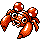

#046
Paras
BugGrass
Abilities: Effect Spore, Damp, Oblivious
Base stats BST 285
HP35
Attack70
Defense55
Speed25
Sp. Atk45
Sp. Def55
Evolution
dbbw EVOLVE_LEVEL, 24, PARASECTLevel-up learnset
LevelMoveType
Lv. 1ScratchNormal
Lv. 1Fury CutterBug
Lv. 7AbsorbGrass
Lv. 10Stun SporeGrass
Lv. 10PoisonpowderPoison
Lv. 13Bug BiteBug
Lv. 15VenoshockPoison
Lv. 19SporeGrass
Lv. 22SlashNormal
Lv. 25Leech LifeBug
Lv. 28GrowthNormal
Lv. 31Seed BombGrass
Lv. 37Knock OffDark
Lv. 40Giga DrainGrass
Lv. 46X-ScissorBug
Lv. 47Energy BallGrass